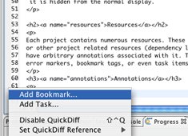
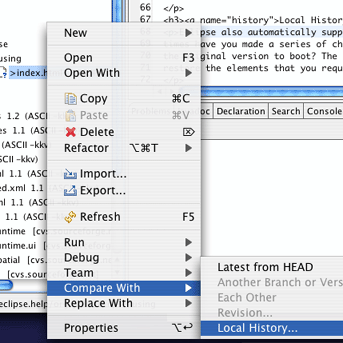
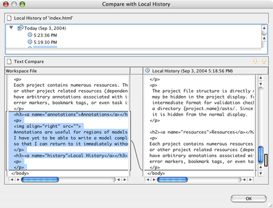

Eclipse supports numerous languages and tools. In order to simplify the interface, each tool or language is associated with its own perspective. A perspective is just a collection of GUI elements and their organization. There are Java, Debugging, Resource perspectives - and now, there is an ACT-R perspective.
You can switch perspectives via the menu: Window->Open Perspective
Eclipse is a project based IDE. The project is the base level container for source code, models, and other file resources. The basic idea is that any modeling endeavour would be encapsulated within a project. The tutorial examples from the ACT-R website have all been implemented in jACT-R. Each one is contained within its own project.
The project file structure is directly mirrored on the local file system. Some files, however, may be hidden in the project display. For example: the ACT-R models are all compiled into an intermediate format for validation checking (and other purposes). They are all stored under a directory {project.name}/asts/. Since this directory shouldn't be manipulated by the user, it is hidden from the normal display.
Each project contains numerous resources. These resources can be files (source files, model files, data files) or other project related resources (dependency links to other projects, etc.). Each file can have arbitrary annotations associated with it. These annotations include things like compilation error markers, bookmark tags, or even task items (to-do).
 Annotations are useful for regions of models that are incomplete, or for navigational support. For example, I have yet to be able to write a model completely in one sitting, so I'll often mark the incomplete regions so that I can return to it immediately without having to remember.
 Eclipse also automatically supports basic revision tracking on the local file system. How many times have you made a series of changes to a model only to realize that you broke it and saved over the original version to boot? The local history allows you to view previous saves in a diff view, and then restore the elements that you require.
Working with multiple people on a single model is exceptionally difficult for many reasons. Eclipse has support for basic team support, in particular CVS. While this doesn't solve the problem of communicating and designing the model, it does help with issues of model revision tracking, preview, updating and committing. 
Tip: I personally always enable team support for my modeling projects, even if I am the only developer. Why? First off, CVS will track the revisions for the life of the model - which greatly exceeds the local history support of Eclipse. Secondly, with anonymous CVS access, I can make my models accessible to anyone who wants to play with them. Finally, and most importantly, my CVS server is on a remote machine which protects my work from the inevitable hard drive failure.
Eclipse at its heart is a development IDE. As such, it has support for running arbitrary bits of code. This is provided via the Run configurations. The Run menu lets you configure the necessary elements needed to execute these bits of code. These configurations are saved by Eclipse so that you can rerun the same configuration without further hassle. We've provided run configuration support for ACT-R models which will be discussed in a later section.